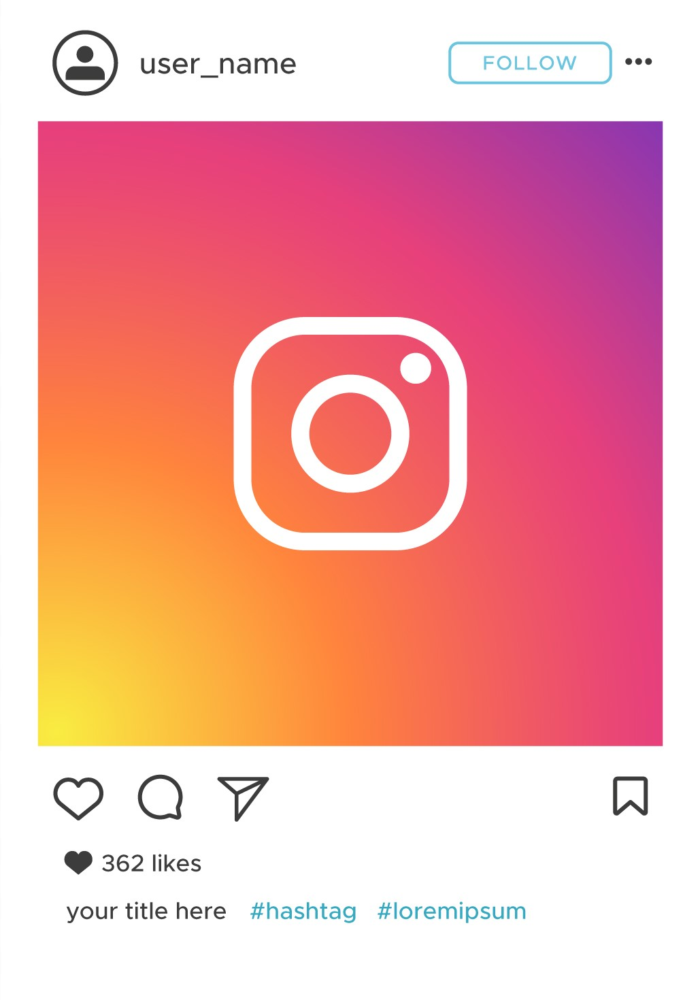
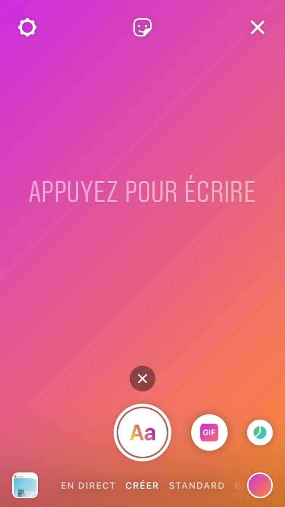

Definition
Réseaux sociaux : Plateforme en ligne ou application favorisant les interactions sociales, permettant de développer des liens avec des amis, des connaissances, ou des collègues en temps réel. Les utilisateurs partagent des contenus variés tels que des photos, vidéos, et messages.
Filtre de l'information : Conceptualisé par Eli Pariser en 2011, les bulles de filtres décrivent l'effet de la personnalisation excessive des contenus par les algorithmes sur les réseaux sociaux. Cela peut conduire à l'isolement intellectuel et informationnel de l'utilisateur en le confinant dans une bulle d'informations conformes à ses préférences.
Algorithme : Ensemble de critères déterminant l'organisation du fil d'actualité en fonction de divers facteurs tels que l'historique de l'utilisateur, les tendances, les centres d'intérêt, etc. Les algorithmes analysent les comportements passés pour personnaliser le contenu affiché, formant ainsi les bulles de filtres.
Type d'information sur les reseaux sociaux
Publication : Partage multimédia (image, vidéo) avec légende. Interaction via likes, commentaires. Exprime moments, pensées, expériences.
Lien Externe : URL partagée pour accéder à un document, site web, ou contenu externe.
Image : Instantané visuel capturant un moment ou un concept. Exprime des émotions, partage une expérience à travers la photographie.

Vidéo : Clip visuel narratif ou informatif. Partage d'expériences, dévoilement de contenus. Interaction via likes, commentaires.
Storie : Brève séquence multimédia éphémère. Partage d'instantanés de la journée, du quotidien. Interaction limitée dans un laps de temps.
Lives : Diffusion vidéo en direct. Interaction instantanée avec les spectateurs, partage d'événements en temps réel.
Blogs : Articles informatifs ou personnels. Partage d'idées, expériences, analyses. Interaction par commentaires, likes.

Problematique
Les effets produit par le filtre de l'information sur les réseaux sociaux peuvent t'ils être néfaste sur nous ?
Développement
Depuis les années 2010, le concept médiatisé de la bulle de filtre a suscité des critiques notables en raison de l'accent mis sur le rôle déterminant des algorithmes. Cette notion pointe du doigt les répercussions de la personnalisation extrême des contenus sur les réseaux sociaux, exposant les utilisateurs à une sélection biaisée d'informations conformes à leurs préférences.
Il est indéniable que le filtre de l'information sur les réseaux sociaux engendre des impacts significatifs, tant positifs que négatifs. D'un côté, il offre la capacité de trier les informations inutiles, améliorant ainsi la pertinence et la qualité des contenus consommés. Cependant, cette pratique entraîne un enfermement de l'utilisateur à un point tel qu'il est principalement exposé à des perspectives similaires, risquant de restreindre sa diversité d'idées et de contribuer à une forme d'isolement intellectuel. Cet équilibre entre filtrage bénéfique et confinement cognitif souligne l'importance cruciale de comprendre et de réguler ces dynamiques pour préserver une expérience d'information équilibrée sur les plateformes en ligne.
Exemple
X (Twitter) :
Depuis 2016, le réseaux social X s'est vu introduire un nouveau fil algorithmique. Les utilisateurs qui voyaient auparavant les tweets apparaître selon un ordre antichronologique verront a la place ces publication selon un ordre de preference défini par l'algorithme. L'algorithme opère sa selection de Tweets selon plusieurs critéres. L'introduction d'un algorithme permet a X de mieux connaître ses utilisateurs et la maniere dont ils interragissent sur le réseaux. Ensuite, il permet d'adapter le contenu en fonction de l'utilisateur et d'ainsi augmenter le dynamisme, l'engagement et l'attention sur la plateforme. Enfin, le systeme est suffisament complexe pour offrir à chacun des utilisateurs de X une experience personnalisée sans que ceux ci se retrouvent toujours face aux même tweets quand ils se connectent.
Facebook :
Facebook compte plus d'un milliard d'utilisateurs dans le monde. C'est pourquoi en 2004 Facebook doit selectionner les informations. C'est grace à un algorithme qui se nomme Edge Rank concu en 2006 et remplacer par Newsfeed Ranking Algorithm en 2011 que le réseaux social trie ses informations a l'aide de 100 000 paramètres. Les paramètres connu sont : le créateur, le post, le type, la récence. Facebook veut montrer à l'utilisateur ce qui va le plus l'interresser, il veut créer de la réaction.
Instagram :
Depuis le rachat d'Instagram par Facebook, Instagram a calqué l'algorithme de Facebook et utilise des paramètres comme la popularité, le temps de visionnage, la consultation du profil, le nombre de like , de commentaire… Instagram n'a pas de chronologie dans fil d'information.
Youtube :
Youtube est different des autres réseaux sociaux. C'est un site d'hébergement de video. A la fin d'une video le site propose une video similaire, se qui enferme l'utilisateur. Sont algorithme utilise des criterer comme le nombre de clique, l'historique de l'utilisateur, la nouveauter, le temps de visionnage.
Solution et initiative
Diverses solutions et initiatives ont émergé pour atténuer les effets des bulles de filtre, particulièrement préoccupantes dans le paysage médiatique et informationnel. Aux États-Unis, des plateformes spécialisées telles que "allsides.com" ou "hifromtheothrttide.com" ont vu le jour, offrant aux utilisateurs la possibilité de prendre conscience de la nature de ce phénomène.
Certains moteurs de recherche non personnalisés, tels que Qwant ou Ecosia, mettent en avant leur approche dépourvue de tri idéologique des résultats de recherche, contribuant ainsi à contrecarrer la formation de bulles de filtre en n'exploitant ni collectant de données pour personnaliser les contenus.
Pour une expérience de navigation plus transparente, des extensions spécifiques ont été développées pour des navigateurs web courants tels que Google Chrome ou Mozilla Firefox. Ces extensions visent à mettre en lumière les bulles de filtre, fournissant ainsi aux utilisateurs une vision plus claire et équilibrée des différentes perspectives disponibles.
En France, le journal Le Drenche adopte une approche proactive en proposant des sujets avec deux avis distincts et opposés, explicitement dans le but de combattre les bulles de filtre. Cependant, il est important de noter que cette stratégie journalistique, bien qu'affichant un objectif de neutralité, peut parfois biaiser vers des positions extrêmes, mettant potentiellement en péril la nuance et le pluralisme des opinions.
Ainsi, le défi persiste dans la recherche d'un équilibre subtil entre la diversité des perspectives, la neutralité éditoriale et la préservation d'un espace d'information sain et éclairé.